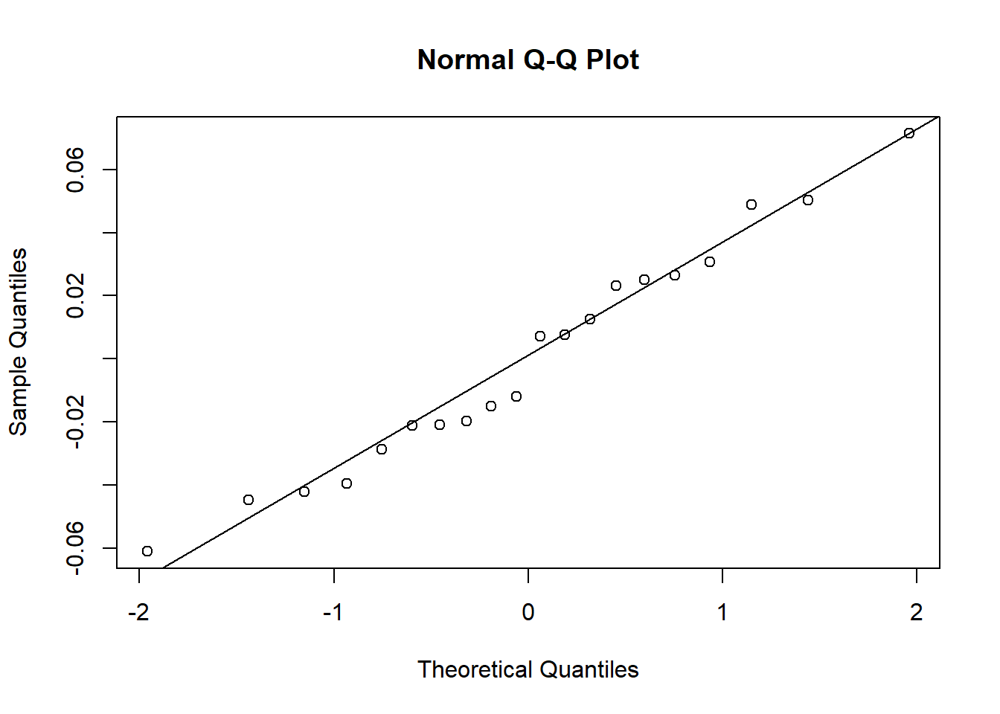
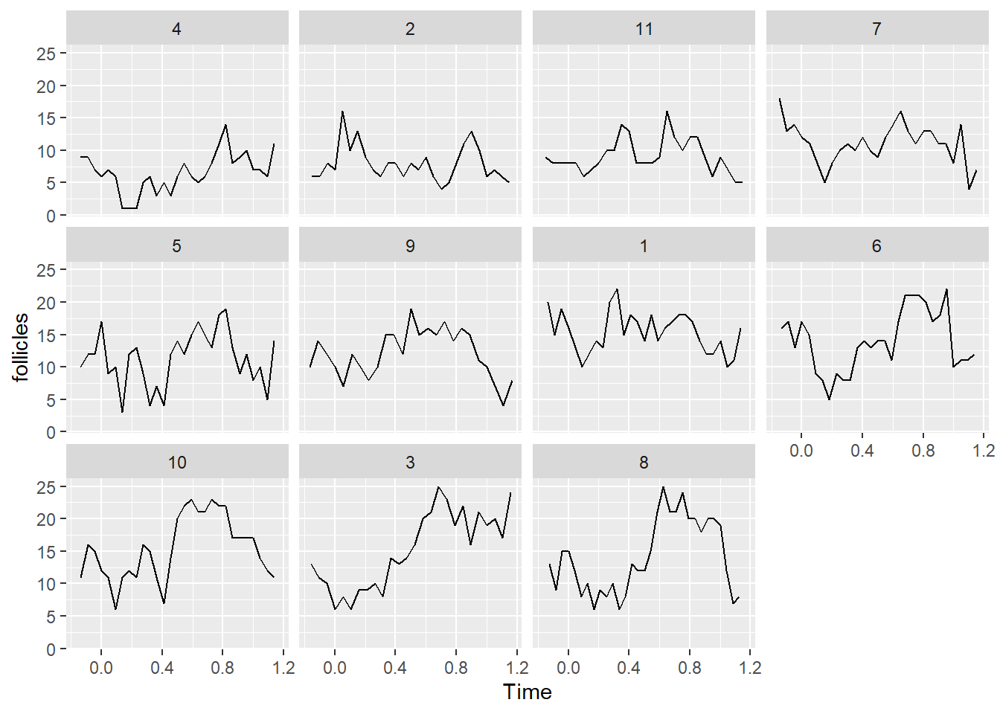
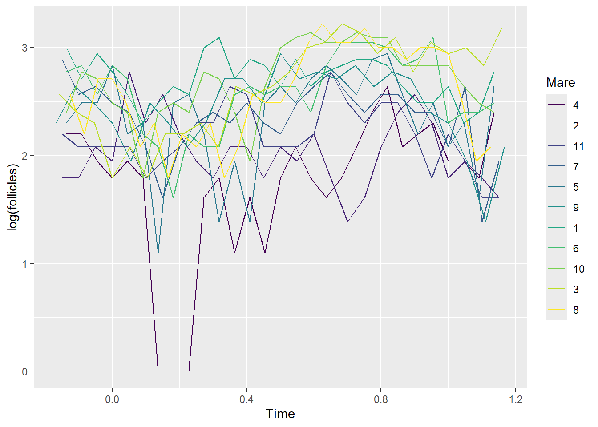
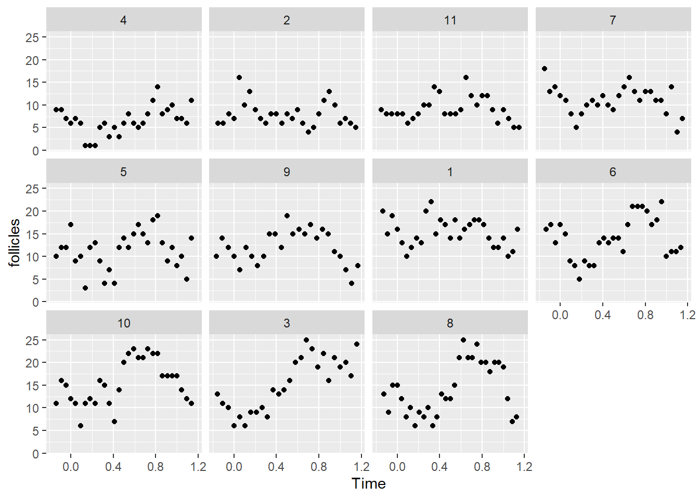
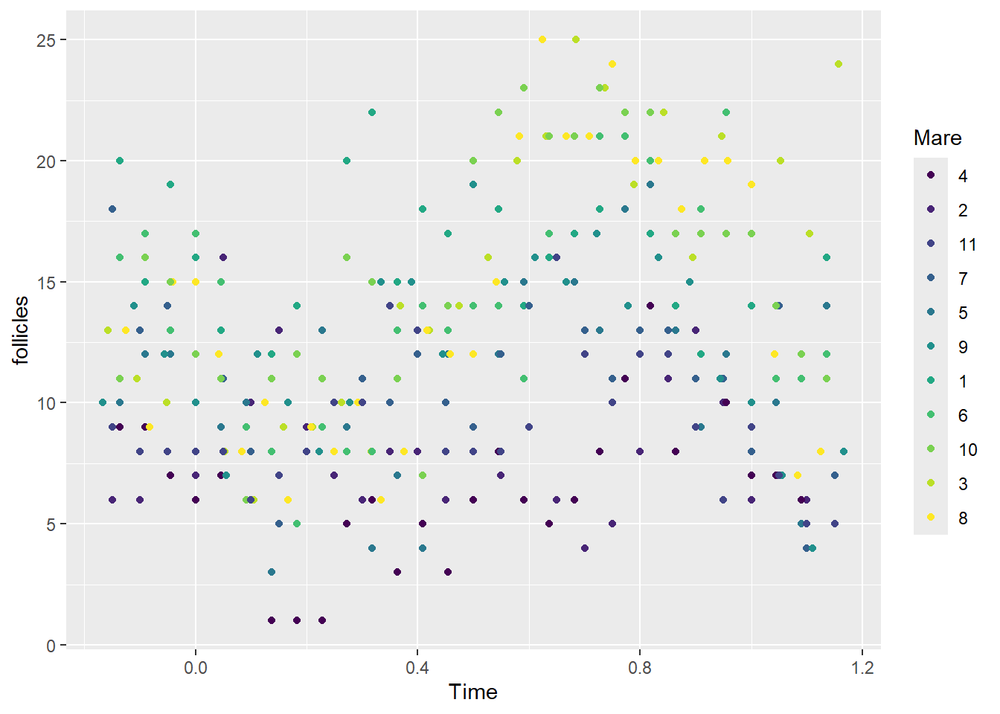
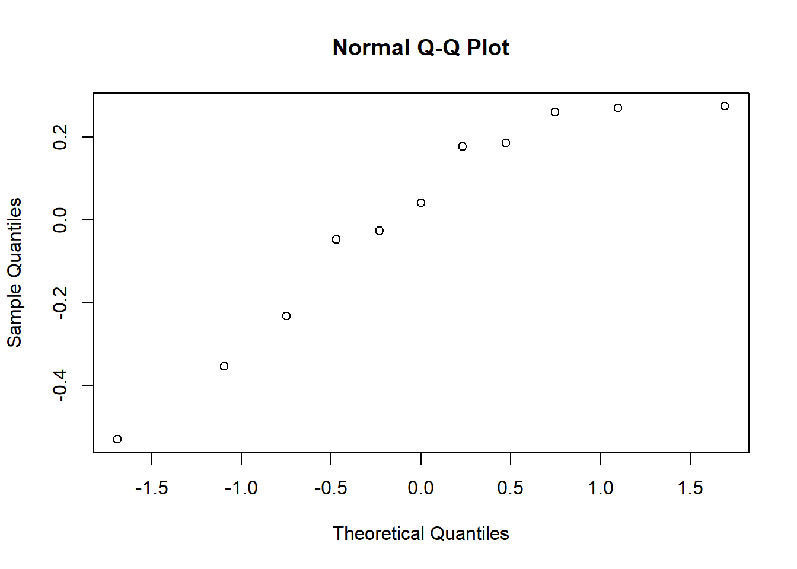

library(tidyverse)# tidying and readability
library(Sleuth3) # data sets
library(vcdExtra) # Categorical data
library(magrittr) # math divide_by
library(lme4) # access the mixed functions7 Random_Effects
Learning Objectives
After successful completion of this module, you will be able to:
- Write out the expression of a generalized linear mixed model.
- Describe the situation in which adding a random effect is important
- Describe the correct method for interpreting fixed effect coefficient estimates from GLMM and be able to give an example.
In R:
- Fit GLMM in R, and perform model selection for both the random and fixed parts.
- Use some examples to understand the issue involved with interpreting fixed effect estimates from GLMM.
- Prepare and submit an R markdown script.
Task list
In order to achieve these learning outcomes, please make sure to complete the following:
Review Module 7 Readings and LecturesParticipate in the Module 7 DiscussionSubmit Module 7 LabSubmit Module 7 HomeworkTake the Module 7 R QuizTake the Module 7 Content Quiz
7 Random_Effects Lectures
Code
#
# Aflatoxicol example -- dealing with tank
#
library(Sleuth3)
library(tidyverse)
library(vcdExtra)
library(magrittr)
library(lme4) # access the mixed functions
# create additional variables in tumors file
data(ex2116)
tumors <- ex2116
tumors %<>% mutate(Dose = Dose, Tumor = Tumor, NoTumor = Total - Tumor, TankID = factor(1:nrow(tumors)),logDose = log(Dose), logDose2 = log(Dose)^2)
# fit fixed effects logisitic regression
glm1 <- glm(cbind(Tumor,NoTumor) ~ logDose + logDose2, data = tumors, family=binomial)
summary(glm1)
# fit fixed effects logistic regression with quasi-binomial likelihood
glm2 <- glm(cbind(Tumor,NoTumor) ~ logDose + logDose2, data = tumors, family=quasibinomial)
summary(glm2)
# fit mixed effects logistic regression, using Tank as random effect
glm3 <- glmer(cbind(Tumor,NoTumor) ~ logDose + logDose2 + (1|TankID), data = tumors,family=binomial)
# oops, it looks like theres' a convergence problems. Let's re-run the glmer algorithm
# using the values from the model we just fit as starting points:
(init <- getME(glm3, name =c ("theta","fixef")))
glm3 <- glmer(cbind(Tumor,NoTumor) ~ logDose + logDose2 + (1|TankID), data=tumors, start=init, family=binomial)
summary(glm3)
summary(glm1)$coefficients
summary(glm2)$coefficients
summary(glm3)$coefficients
# compare using AIC
AIC(glm1,glm3)Clustered Data
Fish in tanks example
Observation of tumors in the same tank are dependent
Clustering leads to correlated Bernoulli observations, which manifests as over dispersion in log-regs.
Observations that are clustered in space or time are more similar and therefore dependent.
Do we want to infer about the clusters or do we want to control for them.
Group id as fixed effect if we want to infer about the cluster.
Group id as random effect if we want to control for clusters.
Generally, if we want CI or estimates, they should be fixed effects.
Mixed Effects
X2 <- tank
# Fixed model
log(odds) = B0 + B1*X + B2*X2
etaij <- tank
Xij <- dose ith fish in jth tank
# Mixed effects model
log(odds) = B0 + B1*Xij + B2*etaj
etaj sim ind N(0, var) for i = 1 to T- The quasibinomial is an alternative to mixed effects for handling Over dispersion.
Mixed Example
log(odds) = beta_0 + beta_1log(dose)_ij + beta_2 log(dose)_ij + eta_j
- glmer in lme4
- doesn’t converge
- compare quasibinomial
data(ex2116)
tumors <- ex2116
# Add no tumor and tank id.
tumors %<>% mutate(Dose = Dose, Tumor = Tumor, NoTumor = Total - Tumor, TankID = factor(1:nrow(tumors)),logDose = log(Dose), logDose2 = log(Dose)^2)
# fit fixed effects logisitic regression
glm1 <- glm(cbind(Tumor,NoTumor) ~ logDose + logDose2, data = tumors, family=binomial)
summary(glm1)
Call:
glm(formula = cbind(Tumor, NoTumor) ~ logDose + logDose2, family = binomial,
data = tumors)
Coefficients:
Estimate Std. Error z value Pr(>|z|)
(Intercept) 1.02921 0.49343 2.086 0.03699 *
logDose -1.03048 0.35743 -2.883 0.00394 **
logDose2 -0.39195 0.06136 -6.388 1.68e-10 ***
---
Signif. codes: 0 '***' 0.001 '**' 0.01 '*' 0.05 '.' 0.1 ' ' 1
(Dispersion parameter for binomial family taken to be 1)
Null deviance: 667.195 on 19 degrees of freedom
Residual deviance: 26.048 on 17 degrees of freedom
AIC: 119.45
Number of Fisher Scoring iterations: 4psi is greater than 1.
# fit fixed effects logistic regression with quasi-binomial likelihood
glm2 <- glm(cbind(Tumor,NoTumor) ~ logDose + logDose2, data = tumors, family=quasibinomial)
summary(glm2)
Call:
glm(formula = cbind(Tumor, NoTumor) ~ logDose + logDose2, family = quasibinomial,
data = tumors)
Coefficients:
Estimate Std. Error t value Pr(>|t|)
(Intercept) 1.02921 0.59942 1.717 0.1041
logDose -1.03048 0.43421 -2.373 0.0297 *
logDose2 -0.39195 0.07454 -5.258 6.41e-05 ***
---
Signif. codes: 0 '***' 0.001 '**' 0.01 '*' 0.05 '.' 0.1 ' ' 1
(Dispersion parameter for quasibinomial family taken to be 1.475778)
Null deviance: 667.195 on 19 degrees of freedom
Residual deviance: 26.048 on 17 degrees of freedom
AIC: NA
Number of Fisher Scoring iterations: 4There is evidene of overdisperion in the model. This is the better model because it accounts for the dispersion.
# fit mixed effects logistic regression, using Tank as random effect
glm3 <- glmer(cbind(Tumor,NoTumor) ~ logDose + logDose2 + (1|TankID), data = tumors,family=binomial)Warning in checkConv(attr(opt, "derivs"), opt$par, ctrl = control$checkConv, :
Model failed to converge with max|grad| = 0.00506263 (tol = 0.002, component 1)Use columns Tumor and NoTumor
+(1|TankID) adds intercept term for each tank.
- is a pipe.
convergence warning is about the variance being small. Trouble optimizing the surface to estimate.
Need to start the algorithm somewhere or it picks.
getME get mixed effects from lme4, go to glm3 and pull off theta, the random effects variance, and the estimates of the fixed effects.
# oops, it looks like theres' a convergence problems. Let's re-run the glmer algorithm
# using the values from the model we just fit as starting points:
(init <- getME(glm3, name =c ("theta","fixef")))$theta
TankID.(Intercept)
0.09980808
$fixef
(Intercept) logDose logDose2
1.0346691 -1.0309744 -0.3925934 - estimate for RE std dev is .099
- fixed effects are similar to the regular model
- start at these values.
glm3 <- glmer(cbind(Tumor,NoTumor) ~ logDose + logDose2 + (1|TankID), data=tumors, start=init, family=binomial)
summary(glm3)Generalized linear mixed model fit by maximum likelihood (Laplace
Approximation) [glmerMod]
Family: binomial ( logit )
Formula: cbind(Tumor, NoTumor) ~ logDose + logDose2 + (1 | TankID)
Data: tumors
AIC BIC logLik deviance df.resid
121.3 125.3 -56.6 113.3 16
Scaled residuals:
Min 1Q Median 3Q Max
-1.79604 -0.62245 -0.08873 0.97928 1.58266
Random effects:
Groups Name Variance Std.Dev.
TankID (Intercept) 0.009959 0.0998
Number of obs: 20, groups: TankID, 20
Fixed effects:
Estimate Std. Error z value Pr(>|z|)
(Intercept) 1.0349 0.5219 1.983 0.04736 *
logDose -1.0308 0.3780 -2.727 0.00639 **
logDose2 -0.3926 0.0647 -6.067 1.3e-09 ***
---
Signif. codes: 0 '***' 0.001 '**' 0.01 '*' 0.05 '.' 0.1 ' ' 1
Correlation of Fixed Effects:
(Intr) logDos
logDose 0.969
logDose2 0.915 0.983 - No trouble with convergence this time.
- Fixed effects table is the same as glm, not the numbers, but the table is there.
- Random effects variance and std dev is new.
- Variance is .0099 and variance cannot be zero or negative.
- These being non zero means there is evidence of over dispersion.
summary(glm1)$coefficients Estimate Std. Error z value Pr(>|z|)
(Intercept) 1.0292126 0.4934250 2.085854 3.699184e-02
logDose -1.0304804 0.3574260 -2.883060 3.938329e-03
logDose2 -0.3919491 0.0613608 -6.387614 1.684940e-10summary(glm2)$coefficients Estimate Std. Error t value Pr(>|t|)
(Intercept) 1.0292126 0.59942066 1.717012 1.041388e-01
logDose -1.0304804 0.43420681 -2.373248 2.968769e-02
logDose2 -0.3919491 0.07454208 -5.258091 6.408881e-05summary(glm3)$coefficients Estimate Std. Error z value Pr(>|z|)
(Intercept) 1.0348488 0.5218465 1.983052 4.736161e-02
logDose -1.0308418 0.3780293 -2.726883 6.393563e-03
logDose2 -0.3925717 0.0647011 -6.067465 1.299448e-09- 1 is binomial, 2 is quasi, estimates are the same std errs is not.
- 3 is mixed, but the estimates are similar and the std errs are intermediate.
- The mixed effects model is likelihood based and can be compared via AIC.
# compare using AIC
AIC(glm1,glm3)| df | AIC | |
|---|---|---|
| glm1 | 3 | 119.4461 |
| glm3 | 4 | 121.2700 |
- The fixed effects model wins, but it’s close.
- There is overdispersion, so the mixed effect can/should be used.
Modeling Strategies
Settle on a model for the fixed effects
settle on a model for the Random effects.
When you don’t know what should be fixed, fit a rich model for fixed effects. Then look at Random effects.
Iterate between steps one and two.
make inference on the fixed estimates
Report on random effects.
If there were different labs for each tank, but tanks in a diff lab, then you only need a REffect for tank.
Consider this sort of info
Things that are clustered tend to be more similar.
If there are many types of clustering or nesting, you need many RE for each type of cluster.
Look at estimated RE variances, If small maybe they’re not needed, unless there is some reason to include them.
Like they correspond to nesting or generate over dispersion
Evaluate normality of REs.
Looking at normality.
RE <- as.numeric(unlist(ranef(glm3)$TankID))
qqnorm(RE)
qqline(RE)
Looks good.
- Use AIC or BIC to compare two mixed effects models.
- fixed effects should be fixed.
- You can also compare mixed models and fixed models.
Lastly summarize the inference.
Ex:
We fit a generalized linear mixed model to the fish tumor counts, using TankID as a random effect and log(Dose) and its square as fixed effects. The random effect variance is estimated to be 0.01, which, though small, seems necessary to include given the structure of the experiment and the evidence of over dispersion in the tumor counts. Both log(Dose) and its square were important to the model, with p-values of p = 0.006 and p < 0.0001, respectively.
- Interpreting the fixed effects is conditional on the mixed effects.
Model Interpretation
- Back transformations and complications.
- Using the same mixed effects model for the fish tumors.
- Solving for the p_js in
\(pj = \frac{exp{β0 +β1logDosej +β2logDose2j +ηj}}{1+exp{β0 +β1logDosej +β2logDose2j +ηj}}\)$
Results in each tank having it’s own dose-response.
We don’t want tank level inference. We want to say something about each dose.
Can’t average of the random effects because of non-linearity of back transformation of logit link.
In a linear mixed model they are linear and we can average.
We have to make conditional inference.
They are conditioned on two observations being in the same cluster.
eta_js need to be the same.
We could go back and use the quasi-binomial model to handle the over dispersion.
That would be correct here
Inference here is academic. We are assuming the REs don’t change the log(odds) of a tumor by much.
The dose probability CI slide shows that with the caveat that the RE are meaningless.
Alternative approaches to eliminate conditional inference.
- generalized estimating equations
- conditional maximum likelihood.
They encourage us to study more on this if we end up actually using these models.
Clustered categorical and count responses is the search term.
Quizzes
R
All questions rely on the data in the Ovary dataset in the nlme library. The dataset contains data on the number of ovarian follicles greater than 10mm in diameter for several days throughout the estrus cycle of several female horses (mares).
library(nlme)
Attaching package: 'nlme'The following object is masked from 'package:lme4':
lmListThe following object is masked from 'package:dplyr':
collapsedf <- OvaryQuestion 1
1 pts
Which of the following gives a plot that well represents the structure of these data (check one)? Group of answer choices
ggplot(data = Ovary, aes(Time, follicles)) + facet_wrap(~Mare) + geom_line()
ggplot(data = Ovary, aes(Time, log(follicles), color=Mare)) + geom_line()
ggplot(data = Ovary, aes(Time, follicles)) + facet_wrap(~Mare) + geom_point()
ggplot(data = Ovary, aes(Time, follicles, color=Mare)) + geom_point()
a and b would work
a and c would work
b and c
b, ggplot(data = Ovary, aes(Time, follicles)) + facet_wrap(~Mare) + geom_line()
- ggplot(data = Ovary, aes(Time, log(follicles), color=Mare)) + geom_line()
c, ggplot(data = Ovary, aes(Time, follicles)) + facet_wrap(~Mare) + geom_point()
a, ggplot(data = Ovary, aes(Time, follicles, color=Mare)) + geom_point()
Flag question: Question 2 Question 21 pts Based on the plots from question 1, which one of the following might be a good way(s) to include the Time variable in the model? Group of answer choices
Time should be included as a random effect in the model.
There is not enough information to tell.
Time + Time2, where Time2 is Time2
Time + Time2 + Time3, where Time3 is Time3
Question 3
Question 31 pts
Use the following R commands to fit a model to the Ovary data (note: all appropriate packages must be loaded):
OV <- Ovary
OV %<>% mutate(.,Time2 = Time^2, Time3 = Time^3)
out <- glmer(data=OV,follicles~Time+Time2+Time3+(1|Mare),family="poisson")
summary(out)Generalized linear mixed model fit by maximum likelihood (Laplace
Approximation) [glmerMod]
Family: poisson ( log )
Formula: follicles ~ Time + Time2 + Time3 + (1 | Mare)
Data: OV
AIC BIC logLik deviance df.resid
1655.9 1674.6 -823.0 1645.9 303
Scaled residuals:
Min 1Q Median 3Q Max
-2.0347 -0.6051 -0.0633 0.6039 4.5225
Random effects:
Groups Name Variance Std.Dev.
Mare (Intercept) 0.07087 0.2662
Number of obs: 308, groups: Mare, 11
Fixed effects:
Estimate Std. Error z value Pr(>|z|)
(Intercept) 2.27040 0.08629 26.312 < 2e-16 ***
Time -1.18825 0.22251 -5.340 9.28e-08 ***
Time2 5.13986 0.57575 8.927 < 2e-16 ***
Time3 -3.71027 0.37768 -9.824 < 2e-16 ***
---
Signif. codes: 0 '***' 0.001 '**' 0.01 '*' 0.05 '.' 0.1 ' ' 1
Correlation of Fixed Effects:
(Intr) Time Time2
Time -0.081
Time2 -0.030 -0.910
Time3 0.062 0.807 -0.975Which one of the following commands will allow you to obtain the fitted values from the out model object on the data scale?
Group of answer choices
OV$fits <- ranef(out)$Mare
OV$fits <- predict(out)
OV$fits <- exp(predict(out))
OV$fits <- exp(fixed(out))
OV$fits <- exp(predict(out))Question 4
1 pts
Which one of the following commands will allow you to look at a Normal probability plot of the random effects from the out model object? Group of answer choices
qqplot(unlist(ranef(out)$Mare))
qqline(ranef(out)$Mare))
qqnorm(ranef(out))
qqnorm(unlist(ranef(out)$Mare))
qqnorm(unlist(ranef(out)$Mare))
C
Question 11 pts Which one of the following is NOT a reason for including a random effect in a model ? Group of answer choices
There is zero-inflation in the responses.
Measurements of a response are taken repeatedly on a sample of subjects.
Observations are clustered in groups.
At each of 25 locations in a forest, measurements on three trees, including height, diameter at breast height and presence/absence of a disease are taken.
Flag question: Question 2 Question 21 pts Consider a study in which student success on a math achievement test is recorded as pass/fail.
Researchers are interested in what factors among gender, ethnicity, days of school missed, and socio-economic status are associated with the likelihood of a student passing the test. Student scores from 5 classrooms within each of 10 schools in a large urban school district are used in the study. Which of the following might you include in a GLMM as random effects? (Select one of the following choices.)
Group of answer choices
Classroom
School
Gender
a and b
a and c
b and c
Flag question: Question 3 Question 31 pts Recalling the breast cancer and lactation study that you revisited in the homework for Module 7, what’s the problem with reporting just the fixed effect estimate corresponding to the lactate variable when you’ve fit a mixed effects model with study as a random effect? (Check one) Group of answer choices
There is no problem, this is part of how you report results from this model.
The only problem is that the fixed effect estimate will be on the log-odds scale, and you may want to back-transform it to the probability scale.
The problem is that the fixed effect estimate is conditional on the random effects, it’s not altogether meaningful by itself.
None of these.
Flag question: Question 4 Question 41 pts Which of the following would be a good way to report results from the fit of a GLMM (check one)? Group of answer choices
You can report the estimate(s) of the random effect variance(s), but you can’t say anything about the fixed effect estimates.
You can report the estimates of the fixed effects, but only if the estimate(s) of the random effect variance(s) is (are) small.
You should just make a plot of the results and describe the results that way.
You can report the estimate(s) of the random effect variance(s) and the p-values (i.e., statistical significance) associated with each fixed effect.